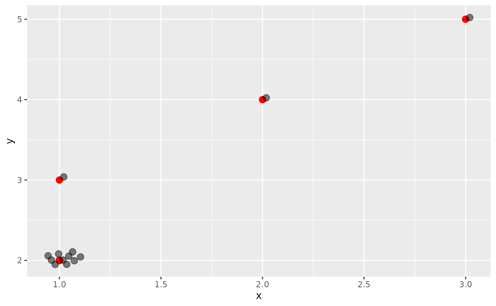

This position looks for any points with identical x and y
positions and packs them in a circle around the original point. The _sf
version applies the position adjustment in projected coordinates.
Details
Note that extreme choices of scale may cause errors.
The scale parameter can instead be specified as an aesthetic for geoms
that support it (geom_centroids()). This allows different locations to have
different scales, which is especially useful when combined with map insets.
Examples
library(ggplot2)
points <- data.frame(
x = c(rep(1, 10), 1:3),
y = c(rep(2, 10), 3:5),
s = 0.05
)
ggplot(points, aes(x, y)) +
geom_point(size = 3, colour = "red") +
geom_point(position = position_circle_repel(0.05), size = 3, alpha = 0.5)

cartographer::nc_type_example_2 |>
dplyr::filter(!county %in% c("HENDERSON", "GASTON", "LINCOLN")) |>
ggplot(aes(location = county)) +
geom_boundaries(feature_type = "sf.nc") +
geom_centroids(aes(colour = type), position = position_circle_repel_sf(scale = 4), size = 0.2) +
coord_automap(feature_type = "sf.nc")